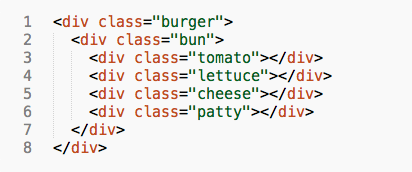
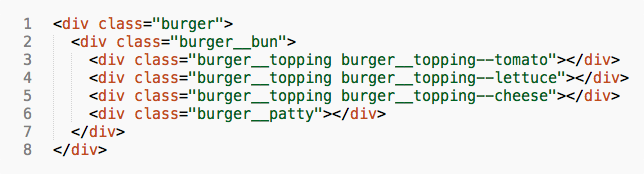
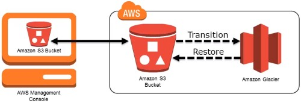
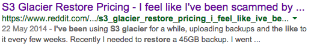
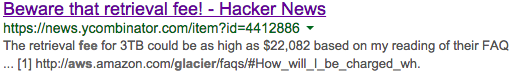
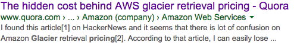
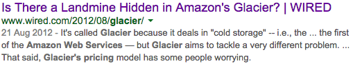

Cogapp Open Studios
Transliteration, diacritics, and glyphs
OWASP—5 out of 10
Not !important—BEM and CSS
$10,000 AWS trap
Accessibility in web design
Transliteration, diacritics, and glyphs
Transliteration
Converting one script to another
Transliteration is not transcription
Mainly concerned with preserving spelling
Transliteration
ל.נ טאלסטאי
L.N. Tolstoy
Standards
ALA-LC
American Library Association - Library of Congress
YIVO
Institute for Jewish Research
Transliteration table
ע — ʻ (ayn)
ש — ś
װ — ṿ (only if a consonant)
It's never that simple
Glyphs
LATIN SMALL LETTER A
U+0061 — a
SNOWMAN
U+2603 — ☃
CAT FACE WITH WRY SMILE
U+1F63C — 😼
It's never that simple
Empirical analysis!
Precomposed vs decomposed
LATIN SMALL LETTER T WITH DOT BELOW
LATIN SMALL LETTER T + COMBINING DOT BELOW
ṭ — ṭ
ṭ — ṭ
ṭ — ṭ
ṭ — ṭ
Conversion to pre-composed characters
unicodedata.normalize('NFC', 'ṭ')
unicodedata.normalize('NFD', 'ṭ')
Solution
- Google Noto
- Add the missing glyphs to the font
Lessons learned
- Caveat - some of this is specific to Yiddish literature
- Check what characters you need to support beforehand
- Utilise expert knowledge
- Test your fonts
- Precomposition is good
Questions?
OWASP
5 out of 10
Your host: Alex Bridge
What is OWASP?
- An online community dedicated to web application security
- Provides free guidance and tools for improving security
What is the OWASP Top Ten?
- A list of the most critical web application security risks
- Guidance on how to avoid each of them in your web applications
1. Injection
Made possible when user input is passed directly to back-end systems (e.g. databases)

Can lead to data leaks, corruption and system takeover
Injection prevention
- Use parameterised APIs if available
- If no safe API, ensure all inputs are escaped
- Use whitelists of acceptable inputs over free text wherever possible
3. Cross-Site Scripting (XSS)
Made possible when malicious input is output directly in pages to users
Attacker can execute scripts in a victim’s browser, making your site a source of malware
XSS prevention
- Use sanitisation routines if available
- Escape all data from users which might be output to a page
- Use whitelists of acceptable inputs over free text wherever possible
5. Security misconfiguration
This covers a wide variety of problems, including
- Security settings in installed software not set correctly
- Unnecessary software running
- Insecure or unchanged-default passwords/accounts
Avoiding security misconfiguration
There's no one silver bullet - you need to build security into day-to-day work practices
- Have a repeatable and automated hardening process for setting up environments
- Scan and audit systems regularly
- Enforce separation between system components to minimise impact of compromises
6. Sensitive Data Exposure
Sensitive data might include passwords, credit card numbers, other personal information.
This might be exposed by SQL injection, server exploit or a man-in-the-middle attack
Avoiding sensitive data exposure
- Don't store what you don't need
- Ensure all sensitive data is securely encrypted, both at rest and when transmitted
- Disable autocomplete for sensitive forms & page caching for sensitive pages
9. Using Components with Known Vulnerabilities
This could potentially undermine all other security measures

Known vulnerabilities can be identified by automated scanning tools
Avoiding use of vulnerable components
- Record all software you're using, including version numbers
- Monitor these for updates
- Have a process to quickly roll out updates
- Have a policy for what software components are/aren't acceptable
What's left?
2. Broken Authentication and Session Management
4. Insecure Direct Object References
7. Missing Function Level Access Control
8. Cross-Site Request Forgery (CSRF)
10. Unvalidated Redirects and Forwards
Links
- Main OWASP site:
- https://www.owasp.org
- OWASP Top Ten:
- https://www.owasp.org/index.php/Top_10_2013-Top_10
Questions?
Not !important;
Some thoughts on BEM and CSS
A lightning talk by Jon White / @superbland
CSS is really good when...
- Make changes without breaking stuff
- You can easily tell what a class does
- Styles are structured in a logical order
- I write some new styles and it just works
CSS is not so good when...
- Changes that solve one problem create another
- Unnecessary weight in the inheritance chain
- Developers who prefer brevity over clarity
- I need to resort to !important; rules or concoct clever inheritance hacks
How things get out of hand
Abridged version
BURGER
The Burger Demo
Nice, terse, 'semantic' class names
But...
The Burger Demo
I can fix this!
I have a better idea...
Just don't do that?
BEM
- Blocks - Components not bound my context
- Elements - Belonging to a block (double underscores __)
- Modifiers - Used to specify variations on blocks and elements (double hyphens --)
The Burger Demo
1 BEM Burger, coming up!

BEM is UGLY and I'm not stupid
- BEM isn't what most people consider beautiful
- It's all about developer confidence;
- BEM helps you write well structured, easily maintainable, robust CSS that can be easily understood, and that is a good thing.
Find out more
Avoiding a $10,000 AWS trap
Adrian Hindle @cogapp
Amazon Web Services
Reliable, scalable and inexpensive cloud computing services.
GlusterFS
Scalable network filesystem

What happened?
Started receiving different alerts
Cloudwatch monitoring stopped
Gluster server stopped working

Fixing GlusterFS
Documentation / IRC / Mailing lists
Created a test environment

New Gluster cluster

Getting the data
How much?
Length of time for retrieval: 4 hours| Retrieval Cost | $9,900.00 |
| Transfer Cost | $449.91 |
| Total cost | $10,349.91 |
$10,000.00




But
Length of time for retrieval 72 hours| Retrieval Cost | $547.25 |
| Transfer Cost | $449.91 |
| Total cost | $997.16 |
#!/bin/sh
List every file in Glacier
Foreach file {
Start restore
Pause
}
Restore 500,000+ JPEG 2000 (5TB+)
Restoration took 4 - 5 days
Download speed 150 - 200 images/min
Download ~125 hours
The following Monday...
Thank you
Questions?
Accessibility in web design
matth@cogapp.com
What is accessibility?
Removing barriers that prevent access to website content and functionality
Inclusivity and diversity
How should we think about accessibility?
Users are not simply disabled or non-disabled
There are huge range of disabilities: cognitive, motor, sensory
Disability may be temporary
If we make sure websites are accessible everyone benefits
Legal duties
How do we know that a website is accessible?
WCAG (Web Content Accessibility Guidelines)
4 main principles: perceiveable, operable, understandable and robust
12 guidelines
65 testable suceess criteria
A, AA, AAA
Section 508
Some WCAG success criteria
Provide text alternatives for non-text content - A
Links must have descriptive text content - A
A sign language interpreter is included for recorded media - AAA
Text to background contrast ratio must be at least 4.5:1 - AA
How do we test accessibility
Chrome Accessibility Audit
WAVE browser plugin
HTML Codesniffer
Automated testing
grunt-accessibility
tenon.io
Questions?